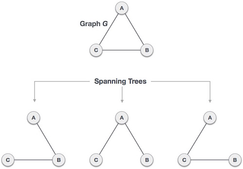

A spanning tree is a subset of Graph G, which has all the vertices covered with minimum possible number of edges. Hence, a spanning tree does not have cycles and it can not be disconnected.
By this definition we can draw a conclusion that every connected & undirected Graph G has at least one spanning tree. A disconnected graph do not have any spanning tree, as it can not spanned to all its vertices.
We found three spanning trees off one complete graph. A complete undirected graph can have maximum nn-2 number of spanning trees, where n is number of nodes. In addressed example, n is 3, hence 33−2 = 3 spanning trees are possible.
We now understand that one graph can have more than one spanning trees. Below are few properties is spanning tree of given connected graph G −
A connected graph G can have more than one spanning tree.
All possible spanning trees of graph G, have same number of edges and vertices.
Spanning tree does not have any cycle (loops)
Removing one edge from spanning tree will make the graph disconnected i.e. spanning tree is minimally connected.
Adding one edge to a spanning tree will create a circuit or loop i.e. spanning tree is maximally acyclic.
Spanning tree has n-1 edges, where n is number of nodes (vertices)
From a complete graph, by removing maximum e-n+1 edges, we can construct a spanning tree.
A complete graph can have maximum nn-2 number of spanning trees.
So we can conclude here that spanning trees are subset of a connected Graph G and disconnected Graphs do not have spanning tree.
Spanning tree is basically used to find minimum paths to connect all nodes in a graph. Common application of spanning trees are −
Civil Network Planning
Computer Network Routing Protocol
Cluster Analysis
Lets understand this by a small example. Consider city network as a huge graph and now plan to deploy telephone lines such a way that in minimum lines we can connect to all city nodes. This is where spanning tree comes in the picture.
In a weighted graph, a minimum spanning tree is a spanning tree that has minimum weight that all other spanning trees of the same graph. In real world situations, this weight can be measured as distance, congestion, traffic load or any arbitrary value denoted to the edges.
We shall learn about two most important spanning tree algorithms here −
Both are greedy algorithms.